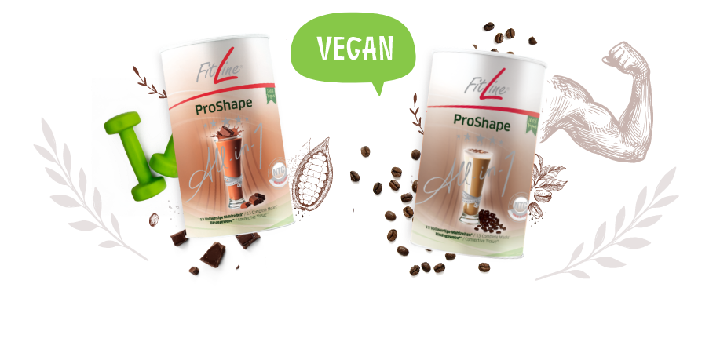
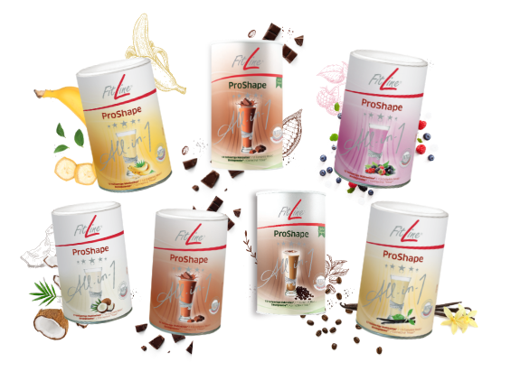
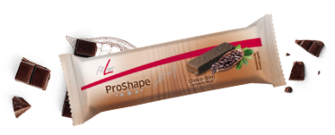
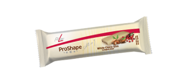
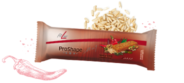
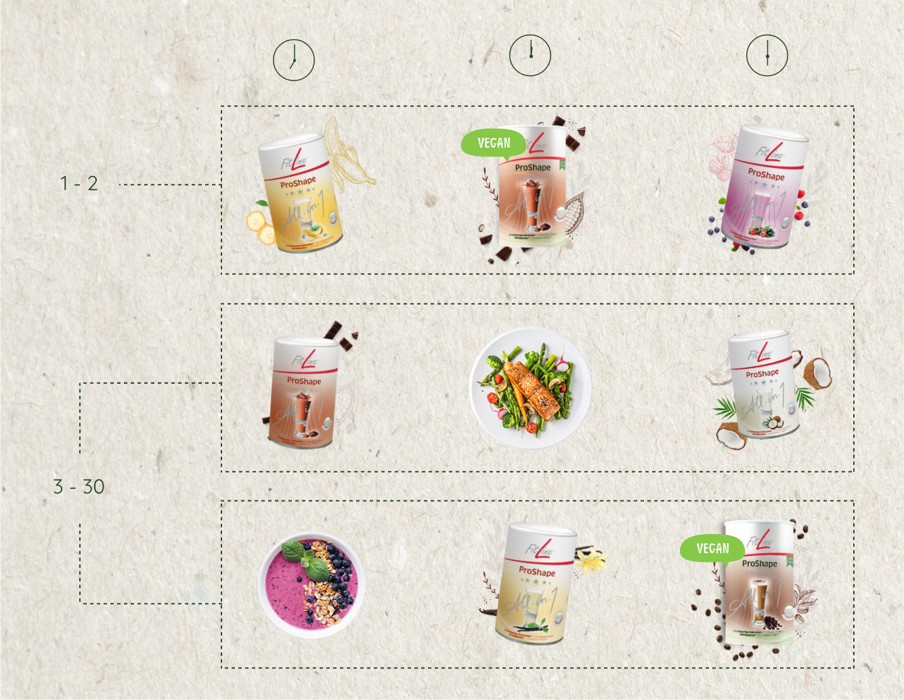
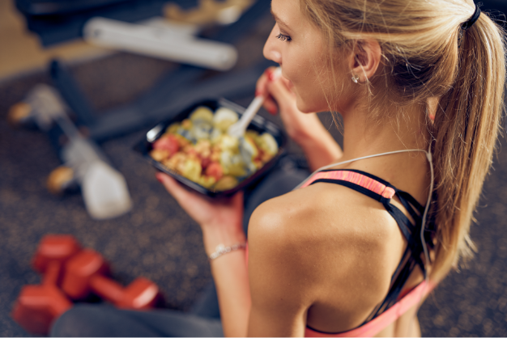
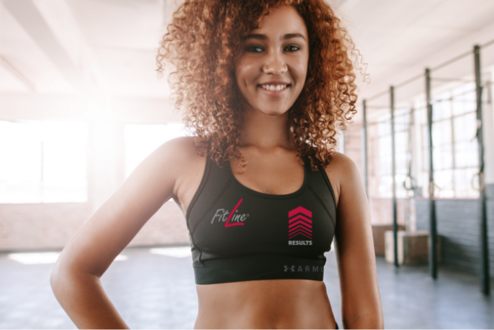

Wyzwanie Proshape® Challenge
✚Przygotuj się na 30-dniowe Shape Challenge (Fit Wyzwanie) z Rolfem Sorgiem
Dzięki FitLine Shape Challenge (Fit Wyzwaniu) z Rolfem Sorgiem osiągniesz osobiste cele fit! W ciągu 30 dni otrzymasz najnowszy program FitLine Shape, pyszne przepisy, efektywne treningi i bieżące wskazówki motywacyjne, które doprowadzą Cię do formy marzeń!
Różne typy sylwetki wymagają różnego podejścia. Shape Challenge (Fit Wyzwanie) z Rolfem Sorgiem pozwala na odpowiednie dopasowanie do charakteru indywidualnych celów. Dojdź do formy życia już teraz!
Zaskocz znajomych i rodzinę, udostępniając zdjęcia przed/po na Facebooku i Instagramie za pomocą hasztagu #FitLineShape
Ponadto możesz przesyłać filmy przed/po oraz dodawać opinie bezpośrednio za pośrednictwem tej strony po ukończeniu Shape Challenge (Fit Wyzwania) i po uzyskaniu własnego certyfikatu.

✚FitLine ProShape All-in-1
Przepyszny program FilLine ProShape All-in-1 to kompletna alternatywa diety, która dostarcza do organizmu wszystkich niezbędnych składników i jednocześnie rzeźbi Twoje ciało! Nieskomplikowane rozwiązanie kwestii posiłków, które bez problemu pomoże Ci osiągnąć Twój cel!
Ekskluzywna, smaczna Stevia i naturalny smak. Teraz ze zoptymalizowaną formułą. Bez konserwantów. Ze słodzikami pochodzenia roślinnego. 
✚FitLine ProShape 2 go
Dzięki Proshape2go łatwo odzyskać formę, nawet żyjąc w ciągłym biegu. Wystarczy zastąpić posiłek batonem, dzięki któremu nawet wiecznie zajęci mogą jeść zdrowo.
Opatentowana formuła FitLine ProShape All-in-1, zoptymalizowana formuła, słodziki pochodzenia naturalnego, świetne rozwiązanie dla wicznie zajętych, naturalny smak.
|  |  |  |
✚Program FitLine Shape
Wyzwanie FitLine Shape z Rolfem Sorgiem to wszystko, czego potrzebujesz. Nie wymaga skomplikowanego liczenia kalorii. Jest proste i łatwe w realizacji. Ciesz się z postępów i coraz lepszych wyników każdego dnia. 
✚Kuchnia FitLine
Kto powiedział, że zdrowe jedzenie musi być nudne? W ramach 30-dniowego Wyzwania, w programie ProShape All-in-1, możesz samodzielnie przygotowywać własne zdrowe posiłki. Dzięki specjalnie przygotowanym przepisom możesz cieszyć się jedzeniem i wciąż notować postępy na drodze do realizacji przyjętych celów! Skorzystaj z przepysznych przepisów! Pycha!  Przepisy śniadaniowe Przepisy na drugie śniadanie
✚Trener FitLine
Regularny trening jest niezbędny, żeby szybko odzyskać formę. Proponowane ćwiczenia pomagają zoptymalizować korzyści z programu Shape Challenge (Fit Wyzwanie) z Rolfem Sorgiem.
Proste: dzięki ćwiczeniom 3 razy w tygodniu poprawisz wyniki, wzmocnisz organizm i podniesiesz ogólną sprawność. Przygotuj się na powrót do formy lub na poprawę formy! Zacznij teraz
✚FitLine Total Look
Dobry wygląd podczas treningu wprawia w dobry nastrój. Odkryj kolekcję odzieży sportowej FitLine! Pochwal się własnym stylem FitLine!  Zacznij teraz